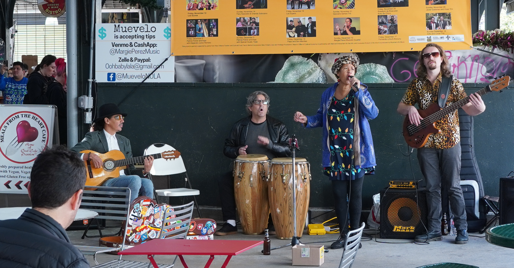
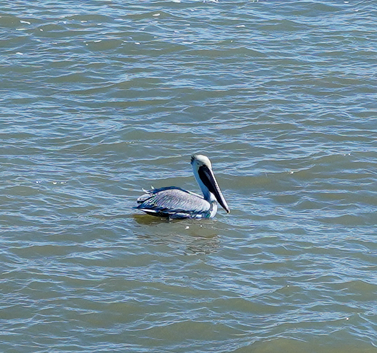

The very impression of the Cresent city — New Orleans, LA.
和NYC一样，今天也出片多多、收获满满，有种哪地方都比Boston有意思的感觉，不过波屯仍是我的最爱。
漫步French Square的街道，印证着之前了解的New Orleans的历史，品味着历史和音乐对当地的影响。
首先映入眼帘的就是各种各样的街头艺术和建筑。我总觉得街头涂鸦NYC独占鳌头，这印象还是来自之前做的TPO。结果NYC没看到多少，倒是这边看到不少有意思的，不过风格比我印象中的更加天真朴实，少了点夸张自我。除此之外，街边的绘画也气氛浓厚。印象最深的是Jackson Square旁边摆满了绘画，其风格阴郁中透露着随遇而安，很多与jazz联系起来，不知道是不是和作者大多是黑人有关。其次就是建筑，尤其是法属区别树一帜。联体公寓两三楼的的小阳台，往往有着复杂纹饰的铁质栏杆，配以外墙明快的色调以及整体厚重的体感，给人以质朴而又富有格调之感。最后说一下几个印象深刻的私宅。House见过很多，自己住的也是，mansion也曾远观过，欧式、美式各种风格不一，但鲜有今天看到的那种以立柱来彰显其典雅。之前在art museum见到很多立柱，主要以Ionic、Corinthian为主。虽然今天的是更简单的Tuscan（甚至可能就是根柱子罢了），但仍然将房子的格调提高了不少。坦白说，在NOLA能看到这些让我颇为惊喜，底蕴深厚啊。


眼前所见，赏心悦目；耳畔所听，金石丝竹。首先是各种街头演奏者，最让我印象深刻的是一家子，母亲单簧管，父亲sousaphone，女儿打击乐，演奏轻松随意富有韵律。最夸张的是唱着唱着感谢别人的tips，然后女儿接起了电话hhhh，单手敲铜钹来配合着，这真的始料未及，忍俊不禁。其次就是有个哥们在乐队里拉起了小提琴，这个本身就很少，更有意思的是堵住马路给人司机来了段inpromptu，司机也满脸微笑，我对这浓厚的音乐氛围和广泛接纳分外欣赏。除了这些，汽车引擎的咆哮也不绝于耳。之前师兄有说过这边盛行改装车，这个声音和加速度，引人注目啊。最为离谱的是我在那几个街道逛了两个小时，那一辆改装过的跑车我看到了三四次，还是one way的路，不得不好奇这哥们是在干撒子，难不成是在显摆自己的靓车？最后提一下，当我想偷拍路边的马拉车时，被车夫无情拆穿了。原来马对快门声很敏感，会偏离方向，这样就瞒不过别人，所以还请光明正大地拍hhhh。



最后放一张鹈鹕，我也是今天才知道有个NBA球队是鹈鹕队，嗯对，就来自NOLA。
